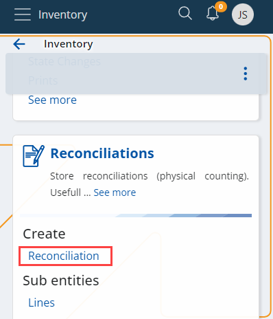
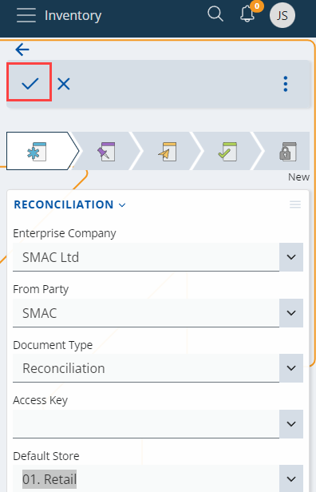
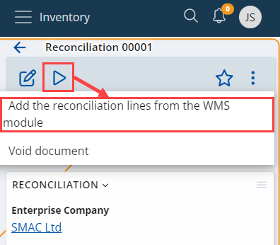
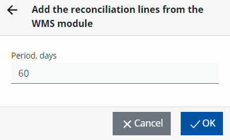

Add reconciliation lines from the WMS module
Knowing the exact number of products in a given warehouse location is crucial for keeping order. However, there are often differences between the expected and the actual quantity of a product, which gets caught during reconciliation.
In such cases, you need to add reconciliation lines to the main reconciliation document.
Note
Warehouse locations are reconciled to determine how many products are being stored there. In addition, the difference between expected and actual quantity is calculated as well.
Adding reconciliation lines
Once differences in product quantity are found, they need to be accounted. For that purpose, you need to use the WMS module.
To begin, create a new reconciliation document from the Logistics --> Inventory section.

Fill it with the necessary information, including the Default Store in which the reconciliation is done, and save the document.

To add reconciliation lines from the WMS module to an existing document, click the play button at the upper-left corner of the screen and then select the Add the reconciliation lines from the WMS module option. This will check exactly which calculations haven’t been accounted yet, and will load lines for manual accounting.

Define the period on which you want the data to be based (in days), and click OK.

In the Lines section, unaccounted lines with differences in product quantity that occurred during reconciliation will be listed.